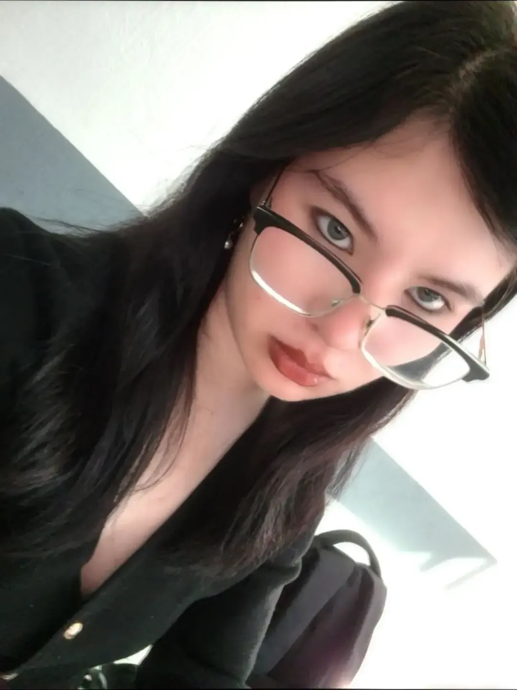
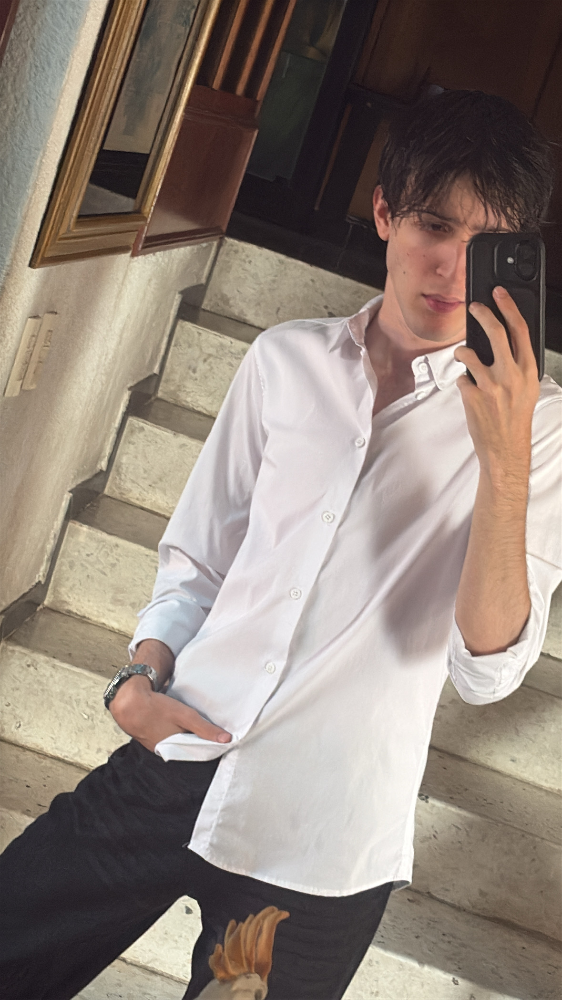

26 · 12 · 2025
Nuestra primera cita
El día en que comenzó esta pequeña aventura.
—días desde aquel día
Preparé un pequeño rincón de internet
para guardar un poquito de lo mucho que te quiero.
Hay días que se quedan a vivir en el corazón.
El día en que comenzó esta pequeña aventura.
El día que empezamos a elegirnos oficialmente.
Y todavía nos quedan muchísimos recuerdos por crear. ♡
Esta canción siempre me va a recordar
el día en que te pedí que fueras mi novia.
Puedes escucharla aquí mismo ♡
Pssst... todavía hay algo más ♡
Tú, yo y todos esos momentos que quiero guardar.


Escribo una nueva todos los días.
Vuelve a visitarme seguido ♡
Toca un número para leerla
Hay cosas que quiero que puedas leer cuantas veces quieras.